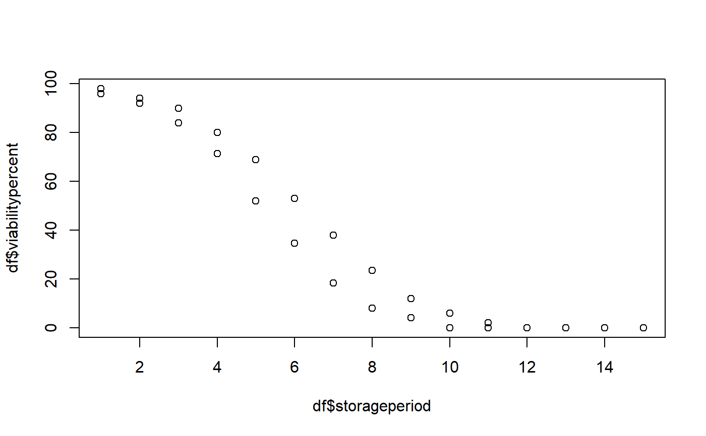

Fit seed viability/survival curve to estimate the seed lot constant (Ki) and the period to lose unit probit viability (σ).
FitSigma(data, viability.percent, samp.size, storage.period, probit.method = c("glm", "tflm"), use.cv = FALSE, control.viability = 100)
| data | A data frame with the seed viability data recorded periodically. It should possess columns with data on
|
|---|---|
| viability.percent | The name of the column in |
| samp.size | The name of the column in |
| storage.period | The name of the column in |
| probit.method | The method to be used for fitting seed viability curve.
Either as a generalised linear model with a probit link function
( |
| use.cv | logical. If |
| control.viability | The control viability (%). |
A list of class FitSigma with the following components:
A data frame with the data used for computing the model.
The fitted model as an object of class glm (if
probit.method = "glm") or lm (if probit.method =
"lm").
A data.frame of parameter estimates, standard errors and p value.
A one-row data frame with estimates of model fitness such as log likelyhoods, Akaike Information Criterion, Bayesian Information Criterion, deviance and residual degrees of freedom.
The estimated seed lot constant from the model.
The estimated period of time to lose unit probit viability from the model.
Warning or error messages generated during fitting of model, if any.
This function fits seed survival data to the following seed viability equation (Ellis and Roberts 1980) which models the relationship between probit percentage viability and time period of storage.
v = Ki − [ p ⁄ σ ]
or
v = Ki − (1 ⁄ σ)⋅p
Where, v is the probit percentage viability at storage time p (final viability), Ki is the probit percentage viability of the seedlot at the beginning of storage (seedlot constant) and 1⁄σ is the slope.
The above equation may be expressed as a generalized linear model (GLM) with a probit (cumulative normal distribution) link function as follows (Hay et al. 2014) .
y = φ(v) = φ(Ki − (1 ⁄ σ) )
Where, y is the proportion of seeds viabile after time period p and the link function is φ-1, the inverse of the cumulative normal distribution function.
The parameters estimated are the intercept Ki, theoretical viability of the seeds at the start of storage or the seed lot constant, and the slope −σ-1, where σ is the standard deviation of the normal distribution of seed deaths in time or the period of time to lose unit probit viability.
This function can also incorporate a control viability parameter into the model to fit the modified model suggested by (Mead and Gray 1999) . The modified model is as follows.
y = Cv × φ(v) = Cv × φ(Ki − (1 ⁄ σ) )
Where, Cv is the control viability parameter which is the proportion of respondent seeds. This excludes the bias due to seeds of the ageing population that have already lost viability at the start of storage and those non-respondent seeds that are not part of the ageing population due to several reasons.
Ellis RH, Roberts EH (1980).
“Improved equations for the prediction of seed longevity.”
Annals of Botany, 45(1), 13--30.
Hay FR, Mead A, Bloomberg M (2014).
“Modelling seed germination in response to continuous variables: use and limitations of probit analysis and alternative approaches.”
Seed Science Research, 24(3), 165--186.
Mead A, Gray D (1999).
“Prediction of seed longevity: A modification of the shape of the Ellis and Roberts seed survival curves.”
Seed Science Research, 9(1), 63--73.
data(seedsurvival) df <- seedsurvival[seedsurvival$crop == "Groundnut" & seedsurvival$mc == 7 & seedsurvival$temp == 25, c("period", "rep", "viabilitypercent", "sampsize")] plot(df$period, df$viabilitypercent)#---------------------------------------------------------------------------- # Generalised linear model with probit link function (without cv) #---------------------------------------------------------------------------- model1a <- FitSigma(data = df, viability.percent = "viabilitypercent", samp.size = "sampsize", storage.period = "period", probit.method = "glm") model1a#> Generalised linear model with probit link function. #> Ki Sigma #> 2.40205 0.4500519#># Raw model model1a$model#> #> Call: glm(formula = frmla, family = binomial(link = "probit"), data = data, #> weights = data$samp.size) #> #> Coefficients: #> (Intercept) storage.period #> 2.402 -2.222 #> #> Degrees of Freedom: 29 Total (i.e. Null); 28 Residual #> Null Deviance: 343.2 #> Residual Deviance: 6.974 AIC: 22.12# Model parameters model1a$parameters#> term estimate std.error statistic p.value #> 1 Ki 2.402050 0.3853836 6.232880 4.579377e-10 #> 2 1/sigma -2.221966 0.3162077 -7.026919 2.111433e-12# Model fit model1a$fit#> null.deviance df.null logLik AIC BIC deviance df.residual #> 1 343.1792 29 -9.061691 22.12338 24.92578 6.974084 28#---------------------------------------------------------------------------- # Generalised linear model with probit link function (with cv) #---------------------------------------------------------------------------- model1b <- FitSigma(data = df, viability.percent = "viabilitypercent", samp.size = "sampsize", storage.period = "period", probit.method = "glm", use.cv = TRUE, control.viability = 98) model1b#> Generalised linear model with probit link function. #> Control viability = 98% #> Ki Sigma #> 2.453183 0.4457701#> #># Raw model model1b$model#> #> Call: glm(formula = frmla, family = binomial(link = "probit"), data = data, #> weights = data$samp.size) #> #> Coefficients: #> (Intercept) storage.period #> 2.453 -2.243 #> #> Degrees of Freedom: 29 Total (i.e. Null); 28 Residual #> Null Deviance: 351.4 #> Residual Deviance: 7.24 AIC: 23.02# Model parameters model1b$parameters#> term estimate std.error statistic p.value #> 1 Ki 2.453183 0.3842330 6.384622 1.718217e-10 #> 2 1/sigma -2.243309 0.3144653 -7.133725 9.768865e-13# Model fit model1b$fit#> null.deviance df.null logLik AIC BIC deviance df.residual #> 1 351.3935 29 -9.507642 23.01528 25.81768 7.239752 28#---------------------------------------------------------------------------- # Linear model after probit transformation (without cv) #---------------------------------------------------------------------------- model2a <- FitSigma(data = df, viability.percent = "viabilitypercent", samp.size = "sampsize", storage.period = "period", probit.method = "tflm") model2a#> Linear model after probit transformation. #> Ki Sigma #> -1.733721 12.77216# Raw model model2a$model#> #> Call: #> lm(formula = frmla, data = data) #> #> Coefficients: #> (Intercept) storage.period #> -1.7337 -0.0783 #># Model parameters model2a$parameters#> term estimate std.error statistic p.value #> 1 Ki -1.73372097 0.24372038 -7.113566 9.693968e-08 #> 2 1/sigma -0.07829529 0.02680567 -2.920848 6.825874e-03# Model fit model2a$fit#> r.squared adj.r.squared sigma statistic p.value df logLik AIC #> 1 0.2335351 0.2061614 0.6343379 8.531354 0.006825874 2 -27.87806 61.75611 #> BIC deviance df.residual #> 1 65.95971 11.26677 28#---------------------------------------------------------------------------- # Linear model after probit transformation (with cv) #---------------------------------------------------------------------------- model2b <- FitSigma(data = df, viability.percent = "viabilitypercent", samp.size = "sampsize", storage.period = "period", probit.method = "tflm", use.cv = TRUE, control.viability = 98) model2b#> Linear model after probit transformation. #> Control viability = 98% #> Ki Sigma #> -1.769103 12.51672# Raw model model2b$model#> #> Call: #> lm(formula = frmla, data = data) #> #> Coefficients: #> (Intercept) storage.period #> -1.76910 -0.07989 #># Model parameters model2b$parameters#> term estimate std.error statistic p.value #> 1 Ki -1.76910303 0.24869426 -7.113566 9.693968e-08 #> 2 1/sigma -0.07989315 0.02735272 -2.920848 6.825874e-03# Model fit model2b$fit#> r.squared adj.r.squared sigma statistic p.value df logLik AIC #> 1 0.2335351 0.2061614 0.6472835 8.531354 0.006825874 2 -28.48414 62.96828 #> BIC deviance df.residual #> 1 67.17187 11.73133 28